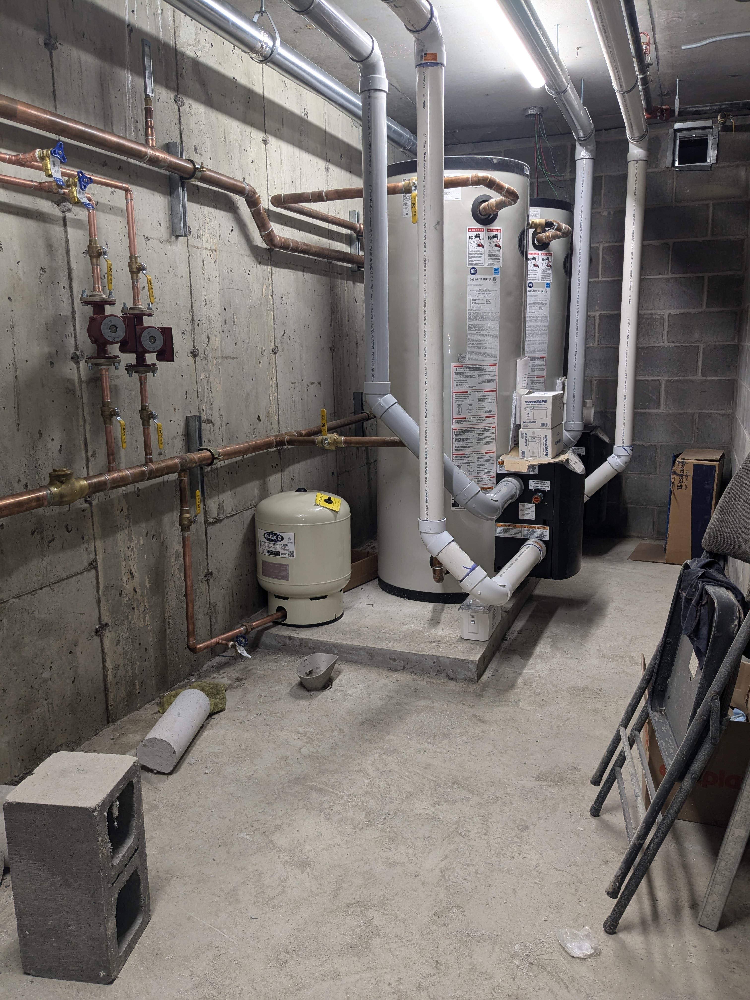

Services de Chauffe-Eau
Dites adieu aux douches froides grâce à nos services fiables de réparation et d’installation de chauffe-eau.
- Nos techniciens expérimentés veilleront à ce que votre chauffe-eau soit installé correctement pour une performance efficace et efficiente.
- Profitez de l'eau chaude à la demande et ne craignez plus d'en manquer pendant les heures de pointe.
- Nous proposons des réparations rapides et rapides afin de minimiser toute perturbation de votre routine quotidienne.
- Augmentez la durée de vie de votre chauffe-eau grâce à un entretien régulier et une installation professionnelle.
- Réduisez vos coûts énergétiques et économisez de l’argent en ayant un chauffe-eau fonctionnant correctement.
- Nos services sont abordables et rentables, vous offrant le meilleur rapport qualité-prix.
- Nous offrons des services d'urgence 24h/24 et 7j/7, afin que vous puissiez faire réparer ou installer votre chauffe-eau quand vous en avez besoin.
Galerie
×